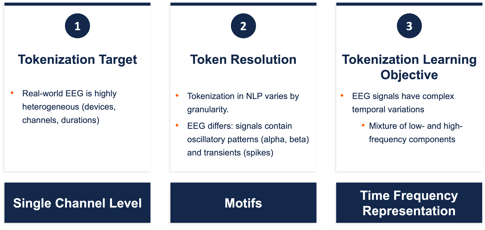
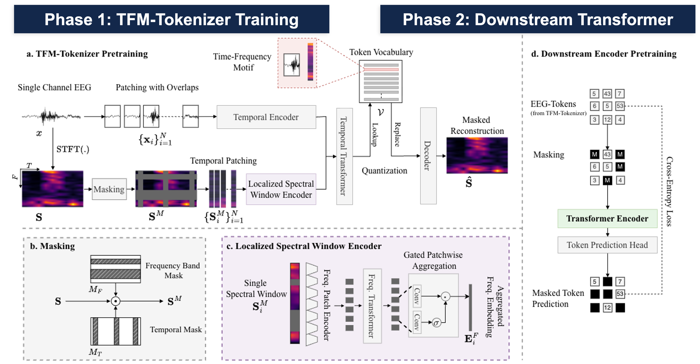
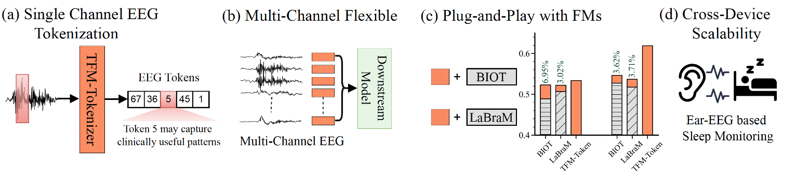

We propose TFM-Tokenizer, a model-agnostic EEG tokenization framework that encodes single-channel EEG into discrete tokens by capturing time-frequency motifs. It improves downstream performance, enhances existing EEG foundation models as a plug-in component, and scales to other brain signal modalities like ear-EEG.
Existing EEG foundation models rely on continuous segment-level embeddings that fail to capture diverse oscillatory waveforms and time-frequency patterns inherent in EEG.
By learning discrete tokens that encapsulate time-frequency motifs from a single channel, we build reusable, scalable representations that are device- and model-agnostic.



pip install torch einops linear_attention_transformer huggingface_hub
Clone the source repository for model definitions and utilities:
git clone https://github.com/Jathurshan0330/TFM-Tokenizer.git cd TFM-Tokenizer
import torch from huggingface_hub import hf_hub_download from models.tfm_token import get_tfm_tokenizer_2x2x8 from utils.utils import get_stft_torch ckpt = hf_hub_download(repo_id="Jathurshan/TFM-Tokenizer", filename="pretrained/tfm_tokenizer_last.pth") tokenizer = get_tfm_tokenizer_2x2x8(code_book_size=8192, emb_size=64) tokenizer.load_state_dict(torch.load(ckpt, map_location="cpu")) tokenizer.eval()
import torch
from huggingface_hub import hf_hub_download
from models.tfm_token import get_tfm_token_classifier_64x4
ckpt = hf_hub_download(repo_id="Jathurshan/TFM-Tokenizer", filename="pretrained/tfm_encoder_mtp_last.pth")
model = get_tfm_token_classifier_64x4(n_classes=YOUR_NUM_CLASSES, code_book_size=8192, emb_size=64)
checkpoint = torch.load(ckpt, map_location="cpu")
filtered = {k: v for k, v in checkpoint.items() if "classification_head" not in k}
model.load_state_dict(filtered, strict=False)
# classification_head is randomly initialized — finetune on your data
from huggingface_hub import hf_hub_download from models.tfm_token import get_tfm_token_classifier_64x4 import torch # Example: TUEV dataset, seed 1 ckpt = hf_hub_download(repo_id="Jathurshan/TFM-Tokenizer", filename="finetuned/TUEV/seed_1/best_model.pth") model = get_tfm_token_classifier_64x4(n_classes=6, code_book_size=8192, emb_size=64) model.load_state_dict(torch.load(ckpt, map_location="cpu")) model.eval()
Dataset-specific n_classes:
n_classes=6 (multi-class)n_classes=1 (binary, use sigmoid)n_classes=1 (binary, use sigmoid)import torch
from einops import rearrange
from huggingface_hub import hf_hub_download
from models.tfm_token import get_tfm_tokenizer_2x2x8, get_tfm_token_classifier_64x4
from utils.utils import get_stft_torch
# Load tokenizer
tok_ckpt = hf_hub_download(repo_id="Jathurshan/TFM-Tokenizer", filename="pretrained/tfm_tokenizer_last.pth")
tokenizer = get_tfm_tokenizer_2x2x8(code_book_size=8192, emb_size=64)
tokenizer.load_state_dict(torch.load(tok_ckpt, map_location="cpu"))
tokenizer.eval()
# Load finetuned encoder (e.g. TUEV seed 1)
enc_ckpt = hf_hub_download(repo_id="Jathurshan/TFM-Tokenizer", filename="finetuned/TUEV/seed_1/best_model.pth")
encoder = get_tfm_token_classifier_64x4(n_classes=6, code_book_size=8192, emb_size=64)
encoder.load_state_dict(torch.load(enc_ckpt, map_location="cpu"))
encoder.eval()
# Inference on raw EEG: x shape (B, C, T) at 200 Hz
x_temporal = x
B, C, T = x_temporal.shape
x_stft = get_stft_torch(x_temporal, resampling_rate=200)
x_stft = rearrange(x_stft, 'B C F T -> (B C) F T')
x_temporal_flat = rearrange(x_temporal, 'B C T -> (B C) T')
with torch.no_grad():
_, x_tokens, _ = tokenizer.tokenize(x_stft, x_temporal_flat)
x_tokens = rearrange(x_tokens, '(B C) T -> B C T', C=C)
preds = encoder(x_tokens, num_ch=C)
If you find our work useful, please consider giving a ⭐ on GitHub and citing our paper:
@inproceedings{
pradeepkumar2026tokenizing,
title={Tokenizing Single-Channel {EEG} with Time-Frequency Motif Learning},
author={Jathurshan Pradeepkumar and Xihao Piao and Zheng Chen and Jimeng Sun},
booktitle={The Fourteenth International Conference on Learning Representations},
year={2026},
url={https://openreview.net/forum?id=2sPmWHZ8Ir}
}